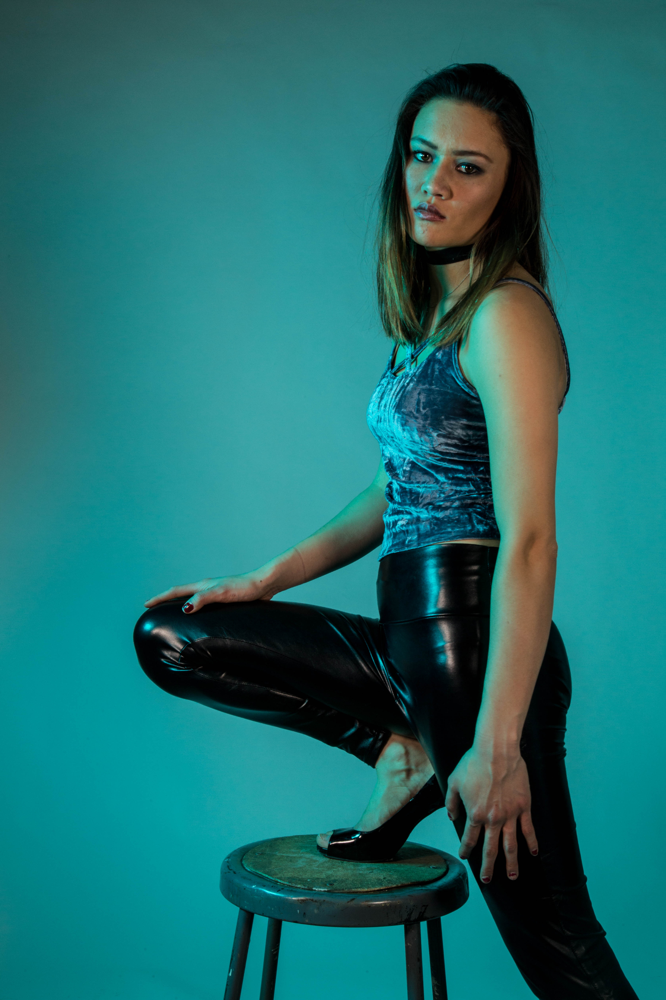

Portraits



These photographs come from my Portrait Series that I did for my Photography I class. Each of the images represent the personalities of the models. The shirtless cowboy image is even in the process of being sold to a local artist who focuses on gender roles and masculinity.

In this series, I combine food coloring and water to document the spontaneity and randomness seconds after dropping food coloring into a bowl of water. My idea for this project was initially sparked by the desire to portray the chaos in a human's brain when one has a mental illness.


Therefore, when it came time to photograph an item with many prospectives for my photography class, my mind IMMEDIATELY went to my Crocs. What you see here is just a select few photographs from a fifteen image series. What made these images interesting to me (beyond the subject itself) was the contrast in colors, the various perspectives, and the contrast in summery shoes and wintery snow on the ground.